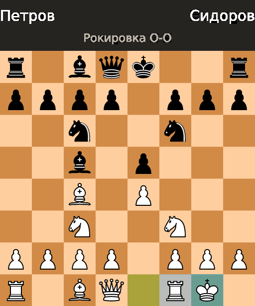
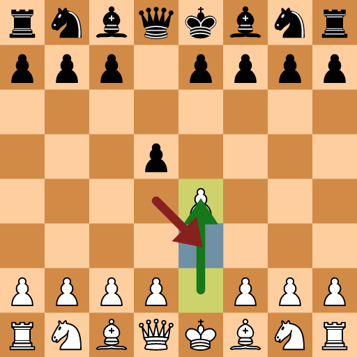
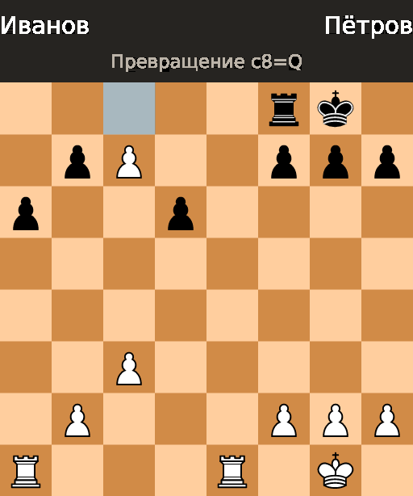
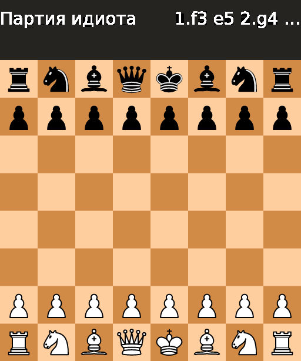
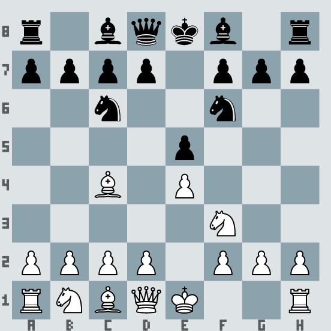
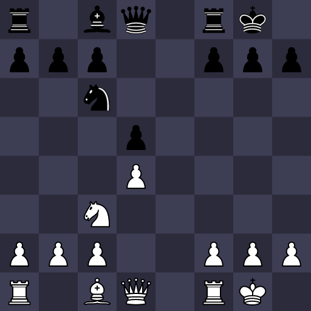
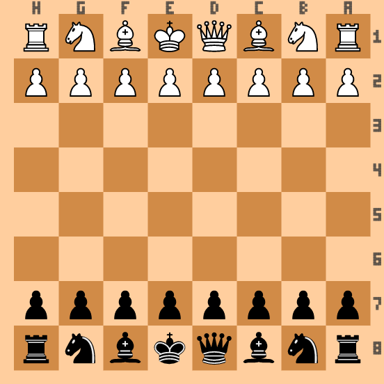
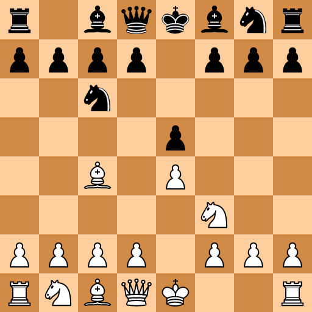
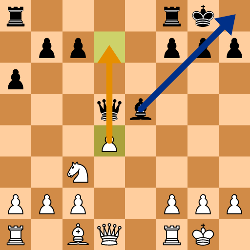

45-chess-start.pngСтартовая позиция + coords-нотация

46-chess-arrows.pngСтрелки UCI (Ge2e4, Bg1f3) + lastMove + кириллица

47-chess-opera.gifGIF: начало «Оперной партии» Морфи (1858)

48-chess-mate.pngМат ферзём (после Qxf7#)

49-chess-castling.pngРокировка O-O: подсветка короля/ладьи

50-chess-enpassant.pngВзятие на проходе: ep-клетка e3 + стрелки

51-chess-promotion.pngПревращение пешки c8=Q

52-chess-fools-mate.gifGIF: «дурачий мат» 1.f3 e5 2.g4 Qh4#

53-chess-blue.pngТема lidraughts-blue + итальянская партия

54-chess-neon.pngКастомная тема neon (цвета темы + фигуры cburnett)

55-chess-flipped.pngОриентация чёрными + рамка зеркальна

56-chess-lossless.webpWebP lossless (5.9 КБ)

57-chess-analysis.svgSVG: жёлтая/синяя стрелки как на analysis